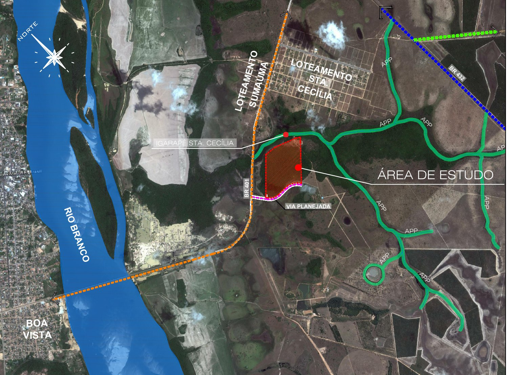
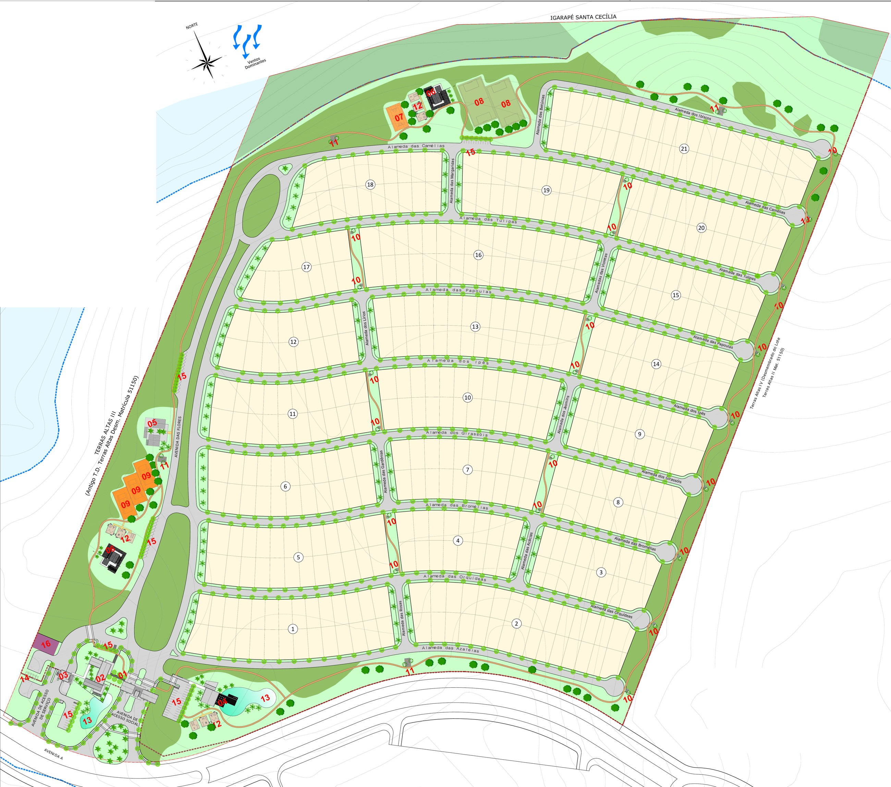

AVRA Incorporadora
Criar lugares onde a vida respira.
Empreendimentos planejados com rigor técnico e respeito ao lugar, em Boa Vista e região.
Manifesto
Toda cidade tem uma brisa. Em grego, ela se chama αύρα. Ninguém a vê, mas ela muda tudo o que toca: o ar de uma varanda, a luz de uma sala, o silêncio de uma rua bem pensada. A AVRA nasceu para construir esse tipo de presença. Lugares que você sente antes de saber explicar.
Nosso lugar
Boa Vista nasceu planejada.
Nós seguimos o traçado.
Ver o caminho de Boa Vista até o Alta Vista ↘
Em 1944, o engenheiro Darcy Aleixo Derenusson desenhou para Boa Vista um plano em leque: avenidas radiais que partem da praça do Centro Cívico, cruzadas por ruas circulares, junto à margem do Rio Branco.
Oito décadas depois, a capital mais ao norte do Brasil é uma das que mais crescem no país. A AVRA nasce aqui para dar continuidade a essa vocação: crescer com planejamento, respeitando o clima, a paisagem e o jeito de viver de quem mora em Roraima.

- 1890
- Boa Vista é elevada a município, em 9 de julho
- 1944
- Começa o plano urbanístico em leque, de Darcy Derenusson
- +45%
- Crescimento da população entre 2010 e 2022 (IBGE)
- 2°49′N
- A capital mais ao norte do Brasil

Primeiro empreendimento AVRA
Residencial
Alta Vista
471 lotes · 47 hectares · lista de interesse aberta
O conceito
Metade do terreno
é para viver junto.
O Residencial Alta Vista é um condomínio fechado de lotes em uma área de 47 hectares no km 5 da BR-401, do outro lado do Rio Branco, vizinho a Boa Vista. Mais da metade da área, 50,7%, é de uso comum: ruas arborizadas, lazer, lagos, mata nativa e uma pista de cooper que contorna o bairro.
O terreno, conhecido como Terras Altas, fica às margens do Igarapé Santa Cecília. Por isso o nome: lotes em cota alta, horizonte aberto e uma faixa de mata preservada ao longo da água. Você escolhe o lote e constrói a casa do seu jeito, dentro de um bairro planejado do primeiro traço à última árvore.
- 47
- hectares de área total
- 471
- lotes residenciais em 21 quadras
- 50,7%
- da área é de uso comum
- ~490m²
- área média por lote
- 841
- árvores e palmeiras no paisagismo
Implantação
O bairro,
quadra a quadra.
A planta de implantação e paisagismo do condomínio. Toque nos pontos para conhecer cada área. Logo abaixo, a mesma planta em uma maquete 3D.

Maquete 3D
O mesmo bairro, em volume.
Maquete gerada a partir da planta para dar noção de escala, quadras e áreas verdes. Arraste para girar.
Arraste para girar ·
Montando a maquete…
Fonte: projeto básico de implantação e paisagismo do condomínio. Números, lotes e equipamentos podem ser ajustados no projeto aprovado e serão confirmados no lançamento.
Lazer e convivência
Tudo o que um dia
precisa, sem sair de casa.
- 3Quadras de tênis
- 2Campos de futebol
- 1Quadra poliesportiva
- 1Espaço gourmet
- 2Churrasqueiras com vestiário
- 1Espaço fitness
- 4Estações de ginástica ao ar livre
- 3Playgrounds
- 2Lagos
- 21Espaços de estar ao longo das alamedas
- 1Pista de cooper contornando o bairro
- 2Portarias: social e de serviço
Paisagismo
Ruas com nome
de flor. E sombra.
O projeto de paisagismo prevê 645 árvores de pequeno e médio porte, 53 árvores de médio porte, 42 palmeiras nativas de grande porte e 101 palmeiras menores. Em um lugar de sol forte o ano inteiro, sombra é infraestrutura.
As ruas internas são alamedas: das Camélias, das Tulipas, dos Ipês, das Orquídeas, dos Girassóis. Ao norte, a mata nativa do Igarapé Santa Cecília fica preservada como área comum.
- 645
- Árvores de pequeno e médio porte
- 101
- Palmeiras de pequeno porte
- 53
- Árvores de médio porte
- 42
- Palmeiras nativas de grande porte
Localização
Do outro lado
do Rio Branco.
- Endereço
- BR-401, km 5 · Terras Altas · Cantá, RR
- Acesso
- Pela BR-401, saindo de Boa Vista pela ponte sobre o Rio Branco
- Entorno
- Igarapé Santa Cecília e área de preservação ao norte; via planejada ao sul
Antes de escolher um lote
Cinco pontos
para observar.
Escolher um terreno é a decisão mais duradoura de uma construção. Estes são os critérios que usamos para planejar o Alta Vista, e que recomendamos a qualquer pessoa que esteja comparando opções.
01Localização e acesso
Observe o caminho até o trabalho, as escolas e os serviços do dia a dia. Acesso por vias asfaltadas e iluminadas faz diferença em todas as estações, especialmente no período de chuvas.
02Infraestrutura entregue
Pergunte exatamente o que estará pronto na entrega: água, esgoto, drenagem, energia, iluminação e pavimentação. Infraestrutura incompleta vira custo para o comprador.
03Documentação e aprovações
Loteamento aprovado na prefeitura e registrado em cartório é garantia de segurança jurídica. Peça o número do registro e confira antes de assinar.
04Sol, vento e topografia
Em Boa Vista o sol é forte o ano inteiro. A orientação do lote em relação ao sol e à ventilação define o conforto da casa e o gasto com energia.
05Regras do condomínio
As diretrizes de construção protegem o valor de todos os lotes. Leia recuos, gabaritos e regras de convivência antes de decidir, e veja se elas combinam com o seu projeto.
Etapas do empreendimento
- ConcepçãoEstudo do terreno e conceito
- Projeto e aprovaçõesEtapa atual
- LançamentoApresentação oficial e tabela
- Obras de infraestruturaRuas, redes e áreas comuns
- Entrega dos lotesLiberação para construir
Etapas indicativas. Confirme a etapa atual com a equipe AVRA.
Seja o primeiro a conhecer o projeto completo.
Quem está na lista de interesse recebe a apresentação do Alta Vista antes do lançamento público.
Entrar na lista de interesse→Como trabalhamos
Do primeiro estudo
à chave na mão.
Planejar
Escolhemos o terreno certo e definimos o produto certo para ele, com estudos técnicos e de viabilidade.
Projetar
Arquitetura, urbanismo e engenharia trabalhando juntos, com aprovações e documentação completas.
Realizar
Obra acompanhada de perto, com cronograma transparente e controle de qualidade em cada fase.
Acompanhar
Depois da entrega, seguimos presentes. Relacionamento também é parte do que construímos.
Planejar com precisão.
Criar espaço para a vida.
Contato
Seu próximo lugar
começa com uma conversa.
Conte o que você procura. Nossa equipe responde pelo WhatsApp, no horário de atendimento.
- (95) 9 0000-0000
- contato@avra.com.br
- Pavilhão de vendas
- Endereço a confirmar · Boa Vista, RR
- Horário
- Seg. a sex., 9h às 18h · Sáb., 9h às 13h
Contatos, endereço e horários são exemplos — substituir pelos dados oficiais.